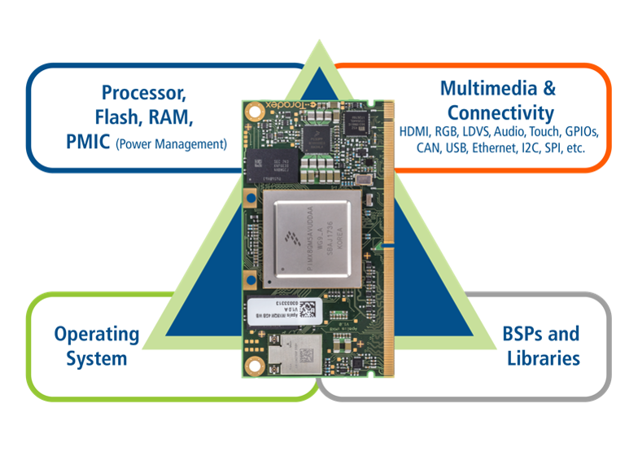

Toradex — System on Modules
2003년 스위스에서 설립된 Toradex는 SoM과 캐리어 보드를 공급합니다.
소량 다품종 제품의 개발 부담을 줄여 줍니다.
- 제품SoM · 캐리어 보드
- 강점장기 공급 · 제품군 확장
- 오큐브 지원보드 지원 패키지(BSP) 적용 · 엔지니어링 지원
System on Module (SoM)이란?
System on Module(SoM) 또는 Computer on Module(CoM)은 프로세서, 메모리와 주요 입출력 기능을 작은 보드에 통합한 임베디드 컴퓨팅 모듈입니다.
운영체제와 드라이버, 보드 지원 패키지(BSP)가 함께 제공됩니다.
캐리어 보드만 바꿔 여러 장비의 공통 기반으로 씁니다.
검증된 모듈을 활용해 핵심 애플리케이션 개발에 집중하고, 하드웨어 개발 위험과 제품 출시 기간을 줄일 수 있습니다.

System on Module 사용 시 장점
시장 출시 시간 단축
애플리케이션 개발에 집중 — 제품 출시 기간 단축
검증된 솔루션
검증된 상용 SoM 사용 — 신규 하드웨어 설계·
최신 기술 채택
주요 SoC·
제품 개발비용 최적화
커스텀 보드 설계 범위와 프로젝트 비용 절감
SoM + 커스텀 캐리어 보드
상용 SoM에 캐리어 보드를 조합해 제품을 구성합니다.
오큐브는 보드 설계와 Linux·

왜 Toradex인가
SoM은 성능뿐 아니라 엔지니어링 지원, 장기 공급, 제품 유지관리까지 함께 검토해야 합니다. Toradex는 개발부터 양산 이후까지 필요한 제품군과 지원 체계를 제공합니다.
산업 환경 대응
산업용 온도·
제품군 확장
같은 제품군 호환 모델 선택 시 캐리어 보드 재설계 범위 축소
제품 수명 · 유지관리
장기 공급과 제품 변경·
하드웨어 기능 활용
부팅 최적화·
개발 환경
보드 지원 패키지(BSP)·
엔지니어링 지원
개발자 센터 기술 문서와 다중 지원 채널 + 오큐브의 국내 1차 엔지니어링 지원